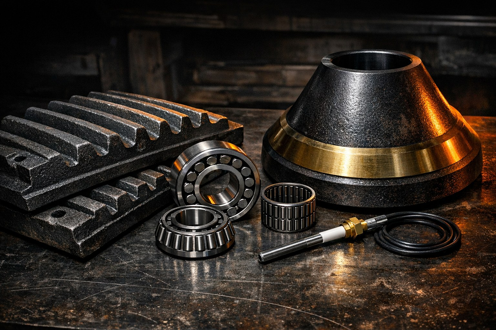

01 / ПРЕИМУЩЕСТВО
Комплектующие для разных марок
Запчасти к российским и импортным АБЗ и ДСК.
Направление 03 · Сервис и комплектующие
Подберём комплектующие к российскому и импортному оборудованию, организуем изготовление деталей по чертежам, монтаж, наладку и ремонт АБЗ, БРУ и ДСК.

Работаем с 2011 года. Инженеры компании взаимодействуют с заводами напрямую и помогают пройти путь от выбора оборудования до его запуска.
Запчасти к российским и импортным АБЗ и ДСК.
Организуем замеры и изготовление отливок на заводах партнёрах.
Датчики Honeywell, сервоприводы Siemens, клапаны, электроды и менеджеры горения.
Шеф монтаж, пуско наладка, ремонт и замена узлов оборудования.
Когда оборудование должно работать, важны не обещания, а подходящие детали и грамотный сервис.
Состав решения и условия работ согласуем до оформления заказа.
Укажите модель, производителя и задачу. Для детали приложите фото, размеры или чертёж.
Проверим исходные данные и подготовим предложение по комплектующим или работам.
Подтвердим состав заказа, условия и сроки до оформления.
В числе примеров работ: шнековые транспортёры для рукавного фильтра LB1500 и металлодетекторы для конвейерных лент шириной 650 и 800 мм в 2022 году. Полный список проектов: sdors.ru/proekty.
Компания поставляет комплектующие к российским и импортным АБЗ и ДСК. Наличие и совместимость уточняются по конкретной позиции.
Да. Компания организует замеры, подготовку чертежей и отливку деталей на заводах партнёрах.
В перечне указаны броня дробилок, сита, ковши, шнеки и подшипники.
Да. В том числе датчики Honeywell, сервоприводы Siemens, менеджеры горения, клапаны и электроды.
Компания оказывает услуги шеф монтажа, пуско наладки, ремонта и замены узлов АБЗ, БРУ и ДСК. Детали работ согласуются отдельно.
По информации маркетинг кита, бесплатная доставка по России предусмотрена при заказе комплектующих от 1,5 млн рублей.
Расскажите, какое оборудование или комплектующие нужны. Подготовим предложение после уточнения исходных данных.
Телефон
+7 (3952) 43 67 23
+7 (924) 605 50 05
Электронная почта
info@sdors.ru
Адрес
Иркутск, ул. Рабочего Штаба, 1/7
Пн–пт, 9:30–18:00